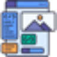

S
Spark AppНаписать пост для соцсетей
«Spark App» работает с материалами для социальных площадок.
Раздел «Для SMM-менеджеров»: варианты ИИ для этой задачи, описания возможностей и переходы к обзорам. Сравните несколько решений на одинаковом примере.
Используйте одно реальное обращение как основу публикации. В Молекуле можно подготовить короткий пост и наглядный пример; статистику вовлечённости и реакцию аудитории измеряйте после публикации.
Клиенты спрашивают, почему сроки ручной керамики отличаются. Подготовь пост по нашему процессу изготовления. Сохрани известные этапы и укажи, когда срок уточняется индивидуально.

«Spark App» работает с материалами для социальных площадок.
«STORI AI» работает с материалами для социальных площадок.
Для «StoryLab AI» сначала определите свою задачу и требуемый результат. Карточка относится к направлению «Маркетинг».
Сравнивать «Telechat» с другими инструментами раздела «No-code и Low-code платформы» удобнее на одинаковом исходном материале.
«twitti» работает с материалами для социальных площадок.

«Ad Mocker» готовит формулировки рекламного материала.
«AI Logo Reveals» работает с материалами для социальных площадок. «AI Logo Reveals» также помогает подготовить персонализированный видеоматериал.
«Beacons AI» представлен в разделе «Маркетинг». При выборе проверьте нужную операцию и условия работы с результатом.

Canva объединяет редактор макетов и инструменты ИИ для текста и изображений. Подходит для оформления публикаций, презентаций и материалов с редактируемыми слоями.
Chad AI объединяет языковые и творческие модели в русскоязычном окне. Среди направлений представлены тексты, изображения и видео, а также музыкальная генерация. Пользователь работает с разными нейросетями через общий сервис, рассчитанный на доступ из России и оплату российскими картами.
Для «Comment Explorer - Youtube» сначала определите свою задачу и требуемый результат. Карточка относится к направлению «YouTube и блогинг».
Для «CyberYozh App» сначала определите свою задачу и требуемый результат. Карточка относится к направлению «SEO-инструменты».

Jasper помогает готовить маркетинговые материалы с учётом требований команды к содержанию. Черновик стоит оценивать по адресату и фактам конкретного предложения.
LeinGPT объединяет текстовые модели и генерацию визуальных материалов в одном интерфейсе. Также доступны музыка и озвучивание. Российский агрегатор работает через веб и Telegram, а расчёты в рублях дополняют использование разных ИИ-инструментов при подготовке выбранного пользователем текстового или медиаматериала.
Magic Avatars от Prisma Lab Inc. создаёт аватары по пользовательским фотографиям с участием ИИ. Фильтры и эффекты дополняют обработку снимка. Продукт ориентирован на визуальные материалы соцсетей, включая Instagram и TikTok, позволяя подготавливать оформленный вариант своего фотографического изображения для публикации.
Сравнивать «PodCut» с другими инструментами раздела «Создание контента» удобнее на одинаковом исходном материале.
Shotix создаёт стилизованные портреты по загруженным снимкам пользователя. В сервисе описаны анимация фотографии в видео и замена лица, а также восстановление старых изображений и аватары. Доступны веб-версия, приложение iOS и Telegram-бот для выбранного способа работы со снимками.
«SMM Agent» работает с материалами для социальных площадок.
«Vidyo AI» подготавливает короткие фрагменты видеозаписи. Дополнительно «Vidyo AI» превращает материал в основу подкаста.
«WizGenerator» работает с материалами для социальных площадок.
«Addlly AI» помогает с задачами поискового продвижения. «Addlly AI» также работает с материалами для социальных площадок.
«Airuco.ru» помогает с задачами поискового продвижения. Дополнительно «Airuco.ru» работает с материалами для социальных площадок.
Markopolo AI помогает изменять рекламные кампании на площадках Meta, Google и TikTok. Работа включает выбор аудитории и разбор результатов рекламы. Платформа предназначена для организаций разного масштаба, которые хотят вести кампании и рассматривать их показатели в процессе дальнейшей настройки.
Masha GPT объединяет доступ к нескольким текстовым нейросетям в русскоязычном чате. Описаны также направления генерации картинок, видео и музыкальных материалов с использованием разных моделей. Продукт представляет общий вход к таким задачам, где работа с текстом соседствует с подготовкой визуального и звукового контента.
Syllaby помогает подготавливать стратегию контента соцсетей с участием ИИ. В инструменте предусмотрены видеосценарии и календарь публикаций. Продукт ориентирован на маркетинговые агентства, объединяя работу над содержанием роликов и планирование их представления в рамках выбранного направления социальных площадок клиента.
«Taggy» работает с материалами для социальных площадок.
Сравнивать «Thumbnails AI» с другими инструментами раздела «Генерация изображений» удобнее на одинаковом исходном материале.

Звукограм преобразует текст в речь с помощью нейроголосов, включая варианты на русском языке. В наборе также описаны расшифровка аудио и видео, озвучивание субтитров и извлечение звуковой дорожки из YouTube. Дополняют работу библиотеки музыкальных материалов и звуковых эффектов для подготовки медиапроектов.
Сравнивать «Нейропродюсер» с другими инструментами раздела «Создание контента» удобнее на одинаковом исходном материале.
«Blitztoksai» создаёт видеоматериал по заданию. Дополнительно «Blitztoksai» помогает подготовить персонализированный видеоматериал.

Claid AI от Let’s Enhance обрабатывает фотографии товаров для электронной коммерции. Сервис удаляет или создаёт фон, увеличивает изображение и предлагает ретушь с цветокоррекцией. Доступны веб-приложение и API, чтобы связывать визуальную обработку снимков с рабочими системами магазина.
Сравнивать «Dr. Lambda» с другими инструментами раздела «Создание контента» удобнее на одинаковом исходном материале.
Pic Copilot создаёт визуальный контент для интернет-магазинов и продавцов маркетплейсов. Предусмотрены товарные изображения, рекламные баннеры и видео, а также показ одежды на ИИ-моделях. Продукт ориентирован на оформление электронной торговли, объединяя несколько видов демонстрационных материалов вместо одного отдельного редактора предметных фотографий.
«Voicemod» преобразует звучание голоса.
«aiCarousels.com» работает с материалами для социальных площадок.
Сравнивать «Birdie» с другими инструментами раздела «Создание контента» удобнее на одинаковом исходном материале.
«Fablerr» работает с материалами для социальных площадок.
Lumiere3d позволяет готовить видеоролики о продуктах в браузере без самостоятельного программирования. В исходном описании упомянуты эффекты, музыка, 3D-модели и сцены. Для конкретного товара сверяйте внешний вид, масштаб и характеристики с реальным предметом, а перед публикацией отдельно уточните условия использования добавленных визуальных и звуковых материалов.
Munch перерабатывает длинные материалы в короткие фрагменты и публикации для социальных площадок. ИИ используется для выбора содержательных участков и подготовки отдельных постов под разные платформы. Инструмент предназначен для повторного использования контента, когда один большой исходник становится основой нескольких самостоятельных материалов для дальнейшего размещения.

Pictory используют для превращения подготовленного содержания в видео. Отбор эпизодов и текст в кадре стоит проверять по главной мысли исходного материала.
«Postly» работает с материалами для социальных площадок.
«Rotor Videos» создаёт видеоматериал по заданию. «Rotor Videos» подготавливает музыкальные варианты по заданию.

Taja AI помогает авторам YouTube оформлять видеопубликации средствами ИИ. Инструмент работает с заголовками и описаниями, а также разделяет видео на сегменты. Аналитические сведения дополняют подготовку материала, позволяя рассматривать публикацию вместе с доступными показателями в ходе работы автора.
Сравнивать «Vulse» с другими инструментами раздела «Маркетинг» удобнее на одинаковом исходном материале.
Сравнивать «ContentCal» с другими инструментами раздела «Маркетинг» удобнее на одинаковом исходном материале.
Doyoula преобразует загруженные фотографии в портреты и цифровые аватары с помощью генеративной модели. Пользователь работает через Telegram-бота и выбирает визуальный стиль. После обработки он получает изменённый образ, который создаётся на основе собственного исходного снимка и выбранного оформления.
Для «HeadlinesAI» сначала определите свою задачу и требуемый результат. Карточка относится к направлению «Создание контента».

Klap используют для задачи: собирать видеосцену по описанию или визуальному исходнику. Ещё одно направление работы: готовить видеоматериалы для публикации.
Страница 3 из 4